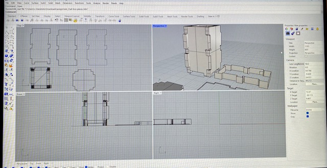

Courtenay's Assignment 4

For this project, my goal was to design a box made up of flat panels with fingerjoints. I 3D printed all of the box panels to design for an interference fit so that when the panels are pressed together, they join tightly and do not need additional fasteners or screws.
The challenge was to design a close enough fit that the resulting box could hold something like sugar without leaking.
With direct support from our wonderful teaching assistant, Junchao, I learned how to create this initial box model in Rhino:


After that I looked online for another box model to try to create from scratch. I used this box for inspiration: